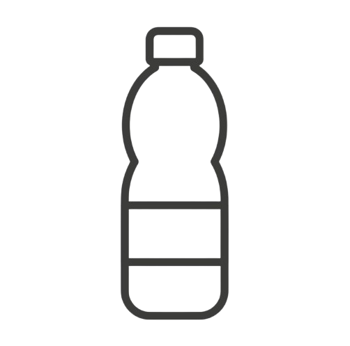
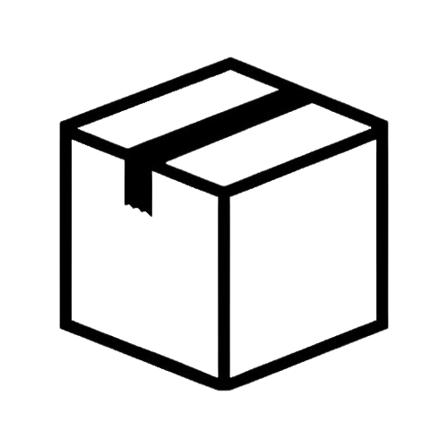
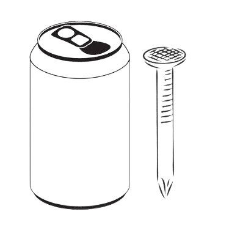
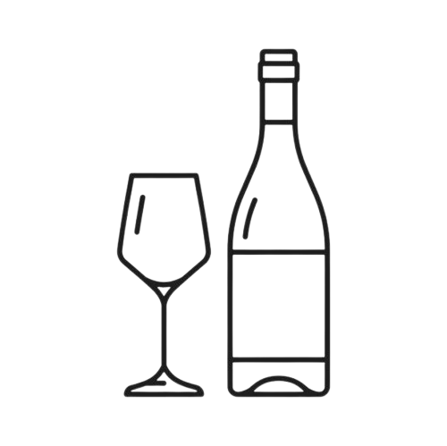
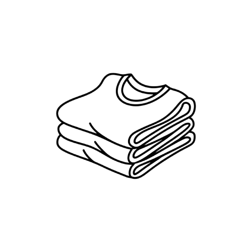
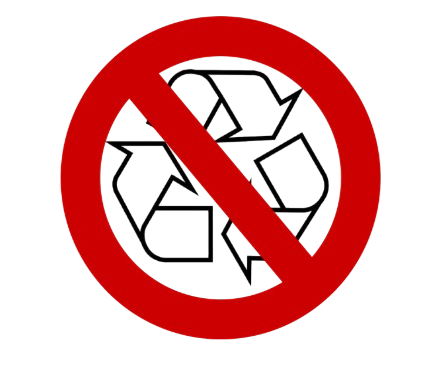

Chiqindilarni turlariga qarab ajratish:
Plastik (Polimerlar)

Plastikning turlari ko'p, lekin asosan idishning tagidagi uchburchak ichidagi raqamlarga qarab ajratiladi.
| Plastik turi | Chiqindi turlari |
|---|---|
| PET (1) | Oddiy suv va ichimlik baklashkalari,koka-kola, kungaboqar yog'i idishlari. |
| HDPE (2) | Shampun, yuvish vositalari (gel, xlor) idishlari, quyuq qatiq idishlari, plastik kanistrlar. |
| LDPE (4) | Polietilen paketlar (oddiy "selofan"lar), kuryerlik paketlari, stretch plyonkalar. |
| PP (5): | Issiqqa chidamli. Qayta ishlatiladigan konteynerlar, muzqaymoq idishlari, dorilar flakonlari, trubalar. |
| PS (6) - Polistirol: | Bir marta ishlatiladigan kofechiklar, tuxum idishlari (penoplastga o'xshashlari). Buni qayta ishlash qiyin, lekin ayrim punktlar oladi. |
-----------------------------------------------------------------------
Qog'oz va Karton

Kartonlar sifatiga qarab 3 ga bo'linadi:
| Karton turi | Chiqindi turlari |
|---|---|
| Gofrokarton: | Maishiy texnika qutilari, jigarrang qalin qutilar. Bu eng qimmati. |
| Oq qog'oz (Arxiv): | Ishlatilgan A4 qog'ozlar, daftarlar, kitoblar. |
| Aralash | Rangli jurnallar, gazetalari, oziq-ovqat qog'oz qutilari (choy qutisi, dori qutisi). |
Diqqat: "Tetra-Pak" (sharbat va sut qutilari) qog'oz emas! Uning ichida folga va plastik bor, uni alohida topshirish kerak.
-----------------------------------------------------------------------
Metal

Metallar ham sifatiga qarab 3 ga bo'linadi:
| Metal turi | Chiqindi turlari |
|---|---|
| Alyuminiy: | Gazli ichimlik bankalari (alyuminiy banka), ba'zi aerozol idishlari (deodorant). |
| Qora metal: | Konserva bankalari, eski kastrulkalar, mixlar, simlar, armatura bo'laklari. |
| Rangli metal: | Mis (simlar ichida), latun (kranlar), qo'rg'oshin (akkumulyatorlar). |
-----------------------------------------------------------------------
Shisha

| Shisha turi | Chiqindi turlari |
|---|---|
| Rangsiz shisha: | Oddiy bankalar va shaffof butilkalar. |
| Rangli shisha: | Yashil (mineral suv) va jigarrang (pivo) butilkalari. |
Kirmaydiganlar: Deraza oynasi, ko'zgular, billur (xrustal), laboratoriya shishalari va dori ampulalari. Bularni oddiy butilkaga qo'shib bo'lmaydi.
-----------------------------------------------------------------------
Material

Material ham sifatiga qarab 3 ga bo'linadi:
| Material turi | Chiqindi turlari |
|---|---|
| Tabiiy mato: | Paxta (paxta chigitidan olingan har qanday kiyim), jun, ipak. |
| Sintetik: | Poliester, neylon (sport kiyimlari). |
| Maxsus: | Eski gilamlar, yumshoq o'yinchoqlar, poyabzal (tagcharmi rezina bo'lgani uchun alohida ajratiladi). |
-----------------------------------------------------------------------
Organik chiqindilar

| Organik chiqindilar turi | Chiqindi turlari |
|---|---|
| Oshxona qoldiqlari: | Meva-sabzavot po'choqlari, tuxum qobig'i, kofe quyqasi, non. |
| Bog' chiqindilari: | Xazonlar, o'rilgan o'tlar, mayda shox-shabba. |
| Qo'shimcha: | Go'sht va sut mahsulotlari |
-----------------------------------------------------------------------
Qayta ishlab chiqarilmaydigan chiqindilar

| Qayta ishlab chiqarilmaydigan turi | Chiqindi turlari |
|---|---|
| Gigiyena: | Ishlatilgan tagliklar, nam salfetkalar, tish cho'tkalari. |
| Kandelyariya: | Skotch, fayl (papka), ruchka korpuslari. |
| Boshqa: | Sigaret qoldiqlari, singan keramika (choynak-piyola), oyna parchalari, kassa cheklari (ular termoqog'oz bo'lgani uchun qayta ishlanmaydi). |